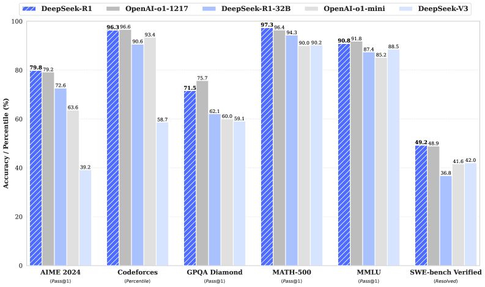

DeepSeek-R1：用纯强化学习「激发」大模型的推理能力
DeepSeek-R1: Incentivizing Reasoning Capability in LLMs via Reinforcement Learning
一句话：与其用大量人类标注的推理过程去「教」模型怎么想，不如只给一个对/错的规则奖励，让模型在强化学习里自己长出反思、验证、换思路这些推理行为。这条路同时催生了纯 RL 的 R1-Zero 和加了冷启动的 R1，后者在数学、代码上追平了 OpenAI-o1。
本页基于已抓取的 arXiv 原文（v1，2025.01.22）正文与图表，以及 Nature 正式版的元信息构建。下文术语首次出现时给出英文原词，便于对照原文。
00 TL;DR · 30 秒抓住核心
- 核心主张：LLM 的推理能力可以纯靠强化学习（pure RL）激发，无需任何人类标注的推理轨迹（chain-of-thought demonstrations）。
- 怎么做到：以 DeepSeek-V3-Base 为底座，用 GRPO 算法 + 规则奖励（答案对不对、格式对不对）直接训练，得到 R1-Zero。训练中模型自发涌现出自我反思、验证、动态改策略，甚至出现「aha moment」。
- 把它变好用：R1-Zero 可读性差、会中英混杂。于是用少量冷启动（cold-start）长思维链数据 + 四阶段流水线打磨出 R1，在 AIME、MATH、Codeforces 上追平 OpenAI-o1-1217。
- 能传给小模型：把 R1 当老师，蒸馏（distillation）到 1.5B～70B 的稠密小模型，效果远超「在小模型上直接做 RL」。
—— 论文对 RL 之美的总结（释义自原文 “rather than explicitly teaching the model… we simply provide it with the right incentives”）
01 问题：通用推理为什么这么难
过去几年，大模型（LLM）配上思维链提示（chain-of-thought, CoT），在基础推理任务上进步很快。但有两个绕不过去的痛点：
- 严重依赖人类标注：要让模型「会推理」，主流做法是收集海量人工写好的推理过程做监督微调（supervised fine-tuning, SFT）。这种数据昂贵、难规模化，而且模型能力被人类示范的天花板锁死。
- 测试时扩展是个开放难题：OpenAI 的 o1 用「推理时增加 CoT 长度」（inference-time scaling）取得突破，但怎么有效做测试时扩展，社区没有公开答案。已有的过程奖励、搜索算法都没能复现 o1 级别的通用推理。
02 已有方案卡在哪
论文并没有罗列一长串相关工作，而是聚焦在几条与本文形成对比的技术路线。有意思的是，其中两条（PRM、MCTS）正是 DeepSeek 团队自己试过、踩了坑才转向纯 RL 的——这部分会在「有意思的点」里展开。先建立画面感：
做法：收集大量「问题 + 详细推理 + 答案」的人类标注样本，对模型做监督学习，让它学会输出类似的 CoT。
卡在哪：标注成本高、覆盖面有限；模型本质是在模仿人类示范，能力上界被标注质量锁死，难以靠自身探索突破。
与本文关系：R1-Zero 的反命题——本文要证明不用任何 SFT 推理数据也能把推理能力练出来。
做法：在推理（inference）阶段增加思维链长度，用更多测试时计算（test-time compute）换取更强的推理表现。
卡在哪：方法不公开；社区无法确知它怎样有效扩展测试时计算，缺少可复现的开源路径。
与本文关系：本文是第一份公开验证「纯 RL 即可激发推理」的开放研究，给出可复现的替代方案，并追平 o1。
做法：训练一个 Process Reward Model（PRM），对中间推理步骤逐步评分，作为更细粒度的训练信号。
卡在哪：通用推理中很难定义「一步」；判断中间步对错本身就难；一旦引入模型化奖励，又会招来奖励作弊（reward hacking），还要额外训练资源、把流程搞复杂。
与本文关系：本文据此放弃神经奖励模型，改用简单的规则奖励，反而更稳。
做法：把答案拆成对应推理步骤的标签，用预训练价值模型（value model）引导的 MCTS 搜索答案，再用搜出的问答对迭代训练 actor 和 value 模型。
卡在哪：与围棋不同，token 生成的搜索空间指数级巨大；设节点上限又易陷局部最优；而细粒度价值模型本身极难训，导致迭代自提升难以为继。
与本文关系：又一个「看起来很美但难规模化」的反例，进一步坚定了纯 RL 的简洁路线。
03 方法总览：一套思路，两条产线
本文的方法可以拆成两条产线，外加一个蒸馏的延伸。它们共享同一个内核：规则奖励 + GRPO 强化学习。区别只在于「要不要先用一点人类数据热身」。
⚠️ 说明：原论文的核心图是结果曲线，没有提供整体架构图。下面方法部分的「产线 / 流程 / GRPO 回路」示意图由本导读依据原文文字描述绘制，忠于原文流程；三张结果曲线则直接取自原论文。
04 引擎：GRPO 怎么在「没有裁判」的情况下学习
强化学习的常规做法（如 PPO）需要一个和策略模型同样大的价值网络（critic）来估计「这一步好不好」，训练成本翻倍。本文采用 GRPO（Group Relative Policy Optimization，组相对策略优化），干脆不要 critic，改用「一组答案互相比」来估计基线。
这个设计直接服务于成本：省掉与策略模型同尺寸的价值模型，让大规模 RL 在 671B 模型上变得可行。
奖励：为什么坚持用「规则」而不是「神经网络」
奖励是 RL 的训练信号源头，决定优化方向。R1-Zero 只用两类规则奖励，刻意不用神经奖励模型：
- 数学题要求把答案放进指定格式（如方框），规则即可判对错
- LeetCode 题直接用编译器 + 预设测试用例给反馈
- 强制模型把思考过程放进
<think>…</think>标签 - 只约束结构，不规定该怎么想，以观察自然演化
训练模板：极简到只规定「格式」
R1-Zero 用一个极简模板引导基座模型：先思考、再给答案，只约束结构，绝不暗示「要反思」「用某种策略」，以免污染对自然演化的观察。
▸训练模板原文（Table 1）点开看模型被要求遵守的输出结构
A conversation between User and Assistant. The user asks a question, and the Assistant solves it. The assistant first thinks about the reasoning process in the mind and then provides the user with the answer. The reasoning process and answer are enclosed within <think> </think> and <answer> </answer> tags, respectively, i.e., <think> reasoning process here </think> <answer> answer here </answer>. User: prompt. Assistant:
05 R1-Zero：推理能力是怎么「自己长出来」的
把上面的引擎接到 DeepSeek-V3-Base 上、跑上几千个 RL 步，最神奇的事情发生了：没人教它怎么推理，它自己越来越会推理。论文用两张曲线 + 一个 case 记录了这个过程。

- 横轴：RL 训练步数（steps），从左到右代表训练逐渐推进。
- 纵轴：在 AIME 2024 数学竞赛题上的准确率（accuracy）。
- 下方曲线 pass@1：单次作答的平均正确率，从起点 15.6% 一路升到 71.0%，已达到 OpenAI-o1-0912 的水平。
- 上方曲线 cons@64：对同一题采样 64 个答案做多数投票（majority voting）后的准确率，进一步冲到 86.7%，反超 o1-0912。
- 关键信息：整条上升曲线没有任何监督推理数据参与，纯靠规则奖励 + RL 驱动——这正是「推理可被 RL 激发」的最直接证据。
一句话总结：准确率曲线证明，只给对错信号，模型也能把数学推理从「勉强及格」练到「竞赛高手」。

- 横轴：RL 训练步数。纵轴：每条回复在训练集上的平均生成长度（average response length，单位 token）。
- 趋势：长度随训练持续增长，从几百 token 涨到上千 token。
- 为什么重要：这个增长不是外部设定的，而是模型内生的——它自发学会「想得更久」，在
<think>里探索、回溯、refine。 - 与涌现行为的关系：思考时间变长的同时，反思（reflection）、验证（verification）、尝试别的解法等高级行为自发出现。
- 本质：这就是「测试时扩展」的自发版本——模型自己学会了把更多计算花在更难的问题上。
一句话总结：思考长度曲线说明，复杂推理行为是 RL 环境中「长」出来的，不是被编程出来的。
「Aha Moment」：模型学会了停下来质疑自己
训练到某个中间版本时，论文观察到一个迷人的现象：模型在解一道题解到一半，突然停下来重新评估自己的初始思路，主动分配更多思考时间。这不是被教的，是涌现的。
▸Aha Moment 实例（Table 3 节选）点开看模型如何中途「醒悟」并回头重算
Question: If a>1, then the sum of the real solutions of √(a − √(a + x)) = x is equal to … <think> To solve …, let's start by squaring both sides … (a − √(a+x))² = x² ⟹ a − √(a+x) = x² … x⁴ − 2a·x² − x + (a² − a) = 0 … Wait, wait. Wait. That's an aha moment I can flag here. Let's reevaluate this step-by-step to identify if the correct sum can be … We started with the equation: √(a − √(a+x)) = x First, let's square both sides: a − √(a+x) = x² ⟹ √(a+x) = a − x² … </think>
模型用拟人化的口吻（“Wait, wait. Wait.”）打断自己、回到上一步重新推导——一个由 RL 自发催生的反思行为。
06 DeepSeek-R1：四阶段流水线把「能推理」变成「好用」
R1-Zero 证明了纯 RL 可行，但留下两个问题：(1) 加一点高质量数据冷启动，能否更快收敛、更强？(2) 怎么训出一个既会推理、又通用好读的模型？答案是一条四阶段流水线。点「下一步」跟着模型 checkpoint 一阶段一阶段地演化：
07 蒸馏：把大模型的推理「打包」给小模型
大模型练出的推理模式，能不能直接搬给小模型？论文用最朴素的办法验证：把 R1 当老师，让小模型模仿它的输出。
08 有意思的点
除了主线，有几处设计取舍与发现值得单独拎出来——它们往往比 benchmark 数字更能帮你判断这套方法适不适合自己的场景。
本文只给了「结构格式 + 对错」两个最弱的约束，刻意不暗示模型该反思、该用某种策略。复杂推理行为完全是模型与 RL 环境交互后自发涌现的。
启发：当任务有可验证的对错信号时，「给激励、让它自己探索」可能比「手把手教」更能突破能力上界。
论文给出两条结论：① 把更强的模型蒸到小模型，效果极好；小模型靠本文这种大规模 RL，算力惊人却未必追得上蒸馏。② 蒸馏经济有效，但要突破智能边界，仍需更强的基座 + 更大规模的 RL。
言下之意：推理模式的「发现」依赖大模型，小模型更适合做「继承者」。
神经奖励模型在大规模 RL 下会被奖励作弊钻空子，且重训成本高、流水线复杂。规则奖励（答案对错、编译通过、格式合规）不可作弊、近乎零成本，是这套方法能跑通的隐形功臣。
边界：它依赖任务可自动验证——数学、代码、逻辑天然适合；开放式写作就得靠后续的偏好奖励模型补位。
PRM：难定义「一步」、难判中间步对错、易奖励作弊——收益不抵其在大规模 RL 中的额外开销。
MCTS：token 生成的搜索空间指数级，设节点上限易陷局部最优；细粒度 value model 极难训，AlphaGo 式的自提升难以复制。
价值：这节告诉读者「为什么最终选了最简单的方案」，比只报喜的论文更可信。
09 实验结论：一句话能说清
一句话：DeepSeek-R1 在数学、代码竞赛、STEM 等可验证任务上追平甚至略超 OpenAI-o1-1217，并显著强于自家 DeepSeek-V3 与其它闭源模型；蒸馏出的小模型也大幅领先同量级开源模型。下面是最核心的几个数字：
略超 o1-1217（79.2%）
与 o1-1217 持平
超过 96.3% 人类选手
显著优于 DeepSeek-V3

- 每组柱子对应一个基准（AIME 2024、Codeforces、GPQA Diamond、MATH-500、MMLU、SWE-bench Verified 等）。
- 不同颜色代表不同模型：DeepSeek-R1、OpenAI-o1-1217、OpenAI-o1-mini、DeepSeek-V3 等。
- 读图重点：在数学（AIME、MATH-500）与代码竞赛（Codeforces）上，R1 与 o1-1217 几乎并肩；在知识类（MMLU、GPQA）上略低于 o1-1217 但反超其它模型。
- 结论性信息：这张图是全文的「成绩单」——它直观说明一个开源、用纯 RL 路线训出的模型，能在高难推理任务上对标当时最强闭源推理模型。
注：这是结果对比图，细节数字以正文表格为准；此处保留原图是为了让读者一眼看到整体格局。
▸更全的对比数字（节选自原论文 Table 4）点开看 R1 vs o1-1217 / V3 / Claude-3.5 / GPT-4o
| 基准（指标） | GPT-4o-0513 | Claude-3.5 | DeepSeek-V3 | o1-1217 | DeepSeek-R1 |
|---|---|---|---|---|---|
| AIME 2024 (pass@1) | 9.3 | 16.0 | 39.2 | 79.2 | 79.8 |
| MATH-500 (pass@1) | 74.6 | 78.3 | 90.2 | 96.4 | 97.3 |
| Codeforces (Rating) | 759 | 717 | 1134 | 2061 | 2029 |
| LiveCodeBench (pass@1-CoT) | 32.9 | 38.9 | 36.2 | 63.4 | 65.9 |
| MMLU (pass@1) | 87.2 | 88.3 | 88.5 | 91.8 | 90.8 |
| GPQA Diamond (pass@1) | 49.9 | 65.0 | 59.1 | 75.7 | 71.5 |
| AlpacaEval 2.0 (LC-winrate) | 51.1 | 52.0 | 70.0 | — | 87.6 |
数学/代码竞赛上 R1 与 o1-1217 并肩；知识类略低于 o1 但强于其它；开放式写作（AlpacaEval/ArenaHard）大幅领先。
蒸馏小模型也很能打
最朴素的 SFT 蒸馏就让小模型表现惊人：R1-Distill-Qwen-7B 在 AIME 上 55.5%，超过 QwQ-32B-Preview；R1-Distill-Qwen-32B 在 AIME 达 72.6%、MATH-500 达 94.3%，逼近 o1-mini；连 1.5B 版本在数学上都能超过 GPT-4o 与 Claude-3.5-Sonnet。
10 局限与未来方向
论文坦诚列出了当前 R1 的短板（这些往往比成绩单更能帮你判断它适不适合你的场景）：
- 通用能力仍逊于 V3：在函数调用、多轮对话、复杂角色扮演、JSON 输出等任务上不及 DeepSeek-V3，计划用长 CoT 改进。
- 语言混杂：目前主要为中英文优化，处理其它语言时可能用英文思考与回答。
- 对提示敏感：few-shot 提示反而会降低表现，建议用户用零样本（zero-shot）直接描述问题 + 指定输出格式。
- 软件工程任务提升有限：因评测耗时长、RL 训练数据少，SWE 类任务相对 V3 提升不大；未来拟用拒绝采样/异步评测改进。